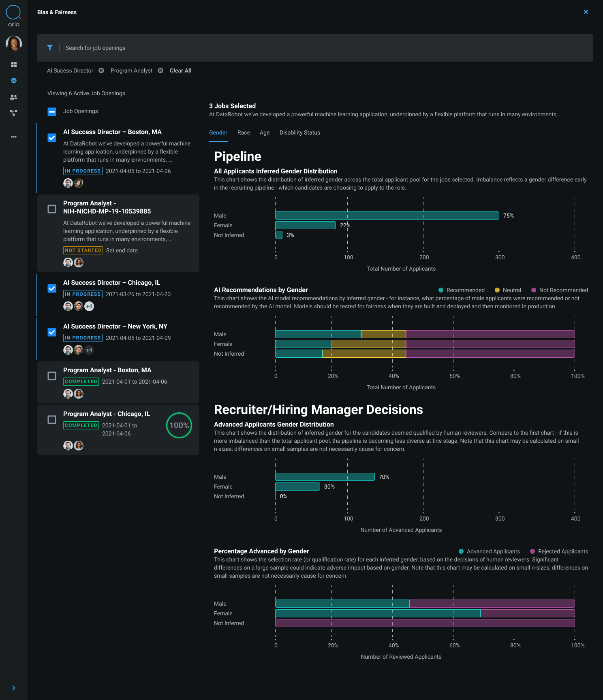

The Bias & Fairness dashboard tracks and analyzes real-time data metrics, helping users monitor the trustworthiness and fairness of the hiring process. This dashboard provides a clear, comprehensive view of key indicators related to model performance, bias detection, and overall decision-making transparency.

At DataRobot, building demonstrative applications was a crucial aspect of my role, especially during the nascent stages of AI/ML when customers often struggled to comprehend and develop valuable use cases. To effectively market our product and facilitate customer understanding, we established a deep impact services group which collaborated with thought partners to develop a several products throughout my tenure. Through these rapid initiatives, ARIA-P (Public Sector) and ARIA-C (Commercial Sector) were born. These products not only showcased the capabilities of DataRobot’s automated machine learning tools but also addressed real-world problems, thereby strategically positioning our product as essential for driving growth and innovation in our clients' operations.
 Data Prep for AI-Driven Enterprises
Data Prep for AI-Driven Enterprises Mobile Data Observability
Mobile Data Observability Cross-platform Recommendations
Cross-platform Recommendations Policy Workflow Optimization
Policy Workflow Optimization Copilot Observability Experience
Copilot Observability Experience